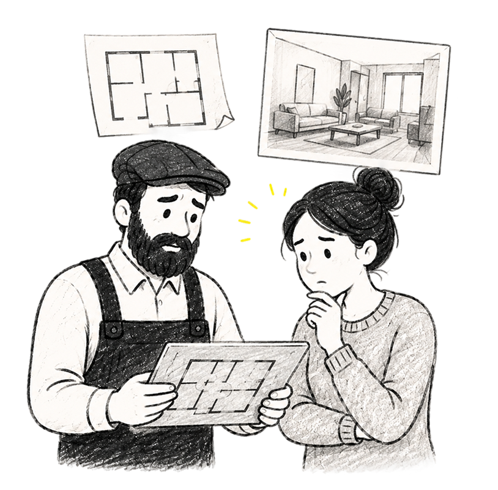
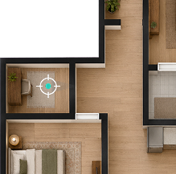
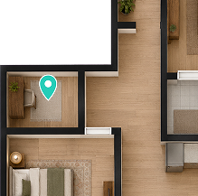
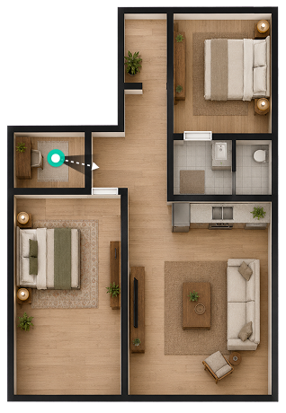

Designing Life-Sized Walkthroughs, an AR experience that let pros place a proposed design at full scale inside the client's existing space.
My Role / Product Designer
Plans and renders helped clients understand how a project might look. What they could not show was scale: how the room would feel, how everything would fit together, and whether the proposal felt right in the actual space.
I can see the design, but I still can't picture being inside it.
It's hard to commit when I can't see how everything comes together.
The render looks great, but I still don't understand the scale.

The problem
Plans showed the proposal. Clients still had to imagine its scale and how it would feel around them.
The goal
Help pros bring the proposal into the room so clients could experience it at full scale.
Pros tapped the AR icon next to the floor plan they wanted to present. The walkthrough opened with that plan already selected.

Before entering the camera view, pros placed themselves on the floor plan and oriented it to the room. Since the interaction was unfamiliar, we watched what people tried to do naturally.
During testing, pros instinctively rotated the floor plan to align it with the room, much like orienting a map. They expected their position to remain anchored while the plan moved around them.
Instead of correcting the gesture, I designed the setup around it. The fixed marker showed where the user was standing and facing, while rotating the plan let them choose how the virtual space would be positioned before entering AR.

Move and rotate your floor plan until the pointer is on the spot where you want to start your AR experience.
In the camera view, pros scanned the room, adjusted the virtual walls until they lined up with the physical space, and confirmed the placement.


Once the walkthrough started, nearly everything disappeared from the screen so people could focus on the room around them.
Once the core interaction was in place, internal tests and live client demos helped us refine the details that made the setup feel clear and controlled: how quickly the plan responded, how readable the virtual surfaces remained over the camera feed, and how easily pros could understand their position and direction on the floor plan.
01
At first, the plan reacted too quickly to touch. Small gestures caused large movements, so we slowed it down until people could position it without fighting the interface.
02
The wall and floor overlays had to be easy to see without covering the room underneath. We tested different colors and opacity levels until both surfaces stayed clear over the camera feed.
03
The simple marker worked on the 2D plan, but it became harder to find once the plan included detailed furniture and materials. We tried several familiar patterns. Each solved part of the problem, but introduced a new one.



Life-Sized Walkthroughs launched in Houzz Pro, giving clients a way to experience proposals at full scale in the rooms they were planning to change.
Clients could respond to what they saw around them, while pros could talk through choices in context instead of asking clients to imagine the result.
There was no playbook for this interaction. The most useful clues came from watching what people tried to do before we told them anything: rotate the plan, find themselves, and line the virtual room up with the real one.
When there was no pattern to follow, people's behavior showed us what the pattern should be.